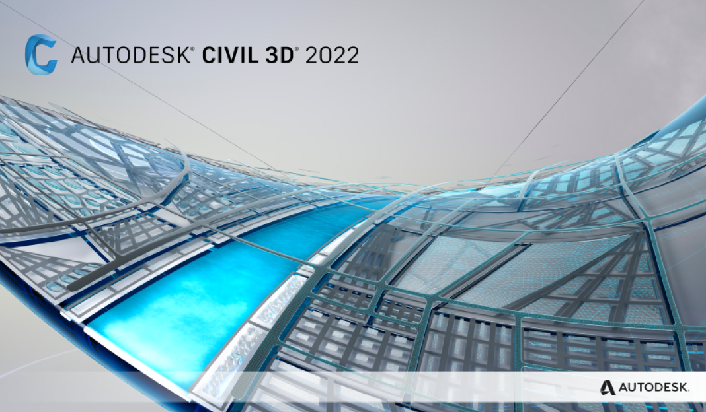

О Autodesk Civil 3D

AutoCAD Civil 3D — программа, базирующаяся на платформе AutoCAD и предназначенная для землеустроителей, проектировщиков генпланов, проектировщиков линейных сооружений. Ключевой
особенностью программы является интеллектуальная связь между объектами, позволяющая динамически обновлять все связанные объекты при внесении изменений в результаты изысканий или проектные решения.
Благодаря таким возможностям, как передача полевых данных, расчеты и автоматизированное черчение, инструменты AutoCAD Civil 3D оптимизируют все процессы, связанные со строительством инженерных сооружений.
AutoCAD Civil 3D объединяет весь цикл проектных работ: от геодезических до возведения объекта.
AutoCAD Civil 3D предоставляет функциональные и инструментальные средства, необходимые на всех этапах выполнения проекта:
• изыскания для задач инженерной геологии;
• геодезические и инженерно-технические изыскания;
• исполнительная съемка и вынос проекта в натуру;
• черчение;
• моделирование ландшафта;
• проектирование объектов инфраструктуры и их элементов;
• мониторинг деформационных явлений;
• расчет объемов земляных работ;
• оформление проектной документации.
Основными преимуществами AutoCAD Civil 3D являются:
• быстрое формирование концепции и выполнение проекта;
• гибкое проектирование, основанное на взаимодействии объектов, позволяющее добиться аккуратности и связности всех частей проекта;
• многопользовательский доступ к проекту и его элементам;
• возможность быстрой разработки, оценки проекта и подготовки выходной документации;
• совмещение чертежных возможностей AutoCAD и специализированных функций проектирования;
• богатый набор функций API (интерфейс прикладного программирования), позволяющий строить решения, основанные на общих моделях данных;
• возможность расширения функционала;
• модель динамического проектирования, содержащая основные элементы геометрии и поддерживающая интеллектуальные связи между объектами (точки, поверхности, земельные участки, дороги, планировка);
• автоматическое формирование планов;
• функциональные возможности AutoCAD Map 3D.
AutoCAD Civil 3D применяется в следующих областях:
• муниципальное управление: планировка застройки, создание и ведение генеральных планов, проектирование и ремонт транспортных магистралей и инженерных сетей города, ведение градостроительного кадастра;
• инженерное картографирование объектов: камеральные работы по созданию крупномасштабных топографических планов;
• геодезические работы: выполнение съемки с последующей обработкой и документированием результатов на объектах (в настоящее время осуществляются не только на промышленных
предприятиях, но и при ведении планировочной, градостроительной и землеустроительной деятельности). При использовании современного оборудования и технологий,
например лазерного сканирования, такие работы могут вестись с субсантиметровой точностью.
AutoCAD Civil 3D отвечает требованиям разработчиков, обеспечивающих ведение широкого диапазона проектов в строительстве. Используя динамическую модель, AutoCAD Civil 3D позволяет в сжатые сроки
разрабатывать проекты и формировать проектную документацию, оценивать множественные сценарии на этапах реализации проекта. Работа специалистов согласована по всем стадиям проектирования, что помогает
выполнять проект на современном уровне и синхронизировать данные его элементов, в том числе готовить информацию для составления электронных карт и использования в ГИС.
Таким образом, на сегодняшний день условия проектирования диктуют повышенные требования к качеству, точности и скорости разработки документации. Достичь этого возможно, используя современные программные
продукты, одним из которых является AutoCAD Civil 3D.